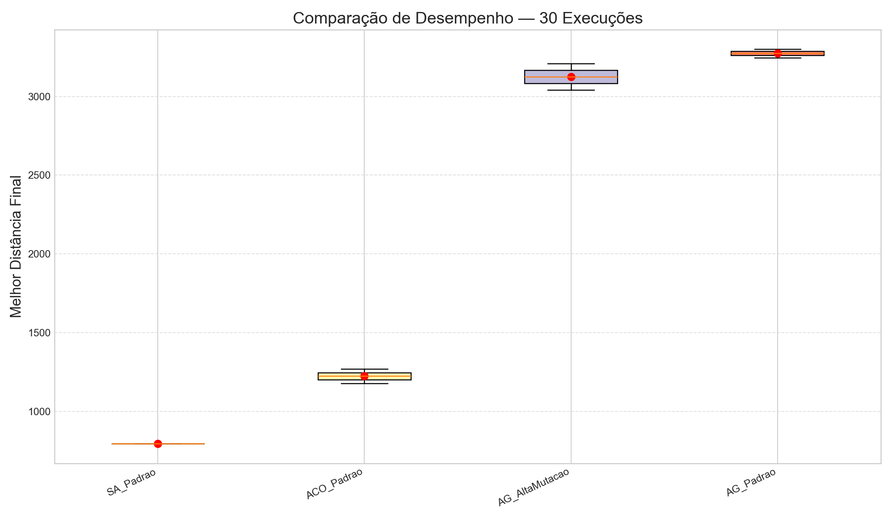
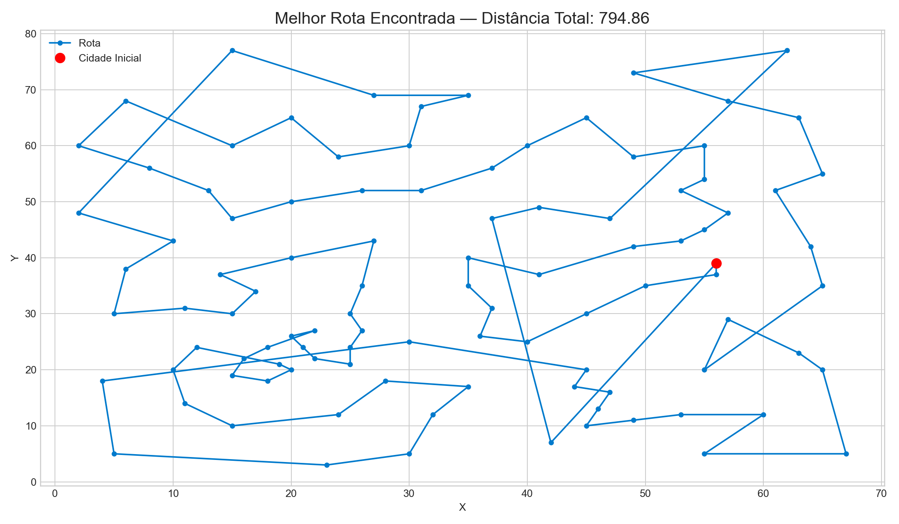
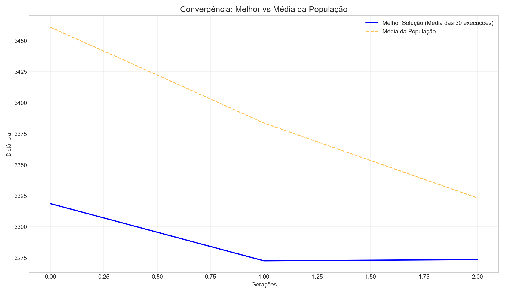
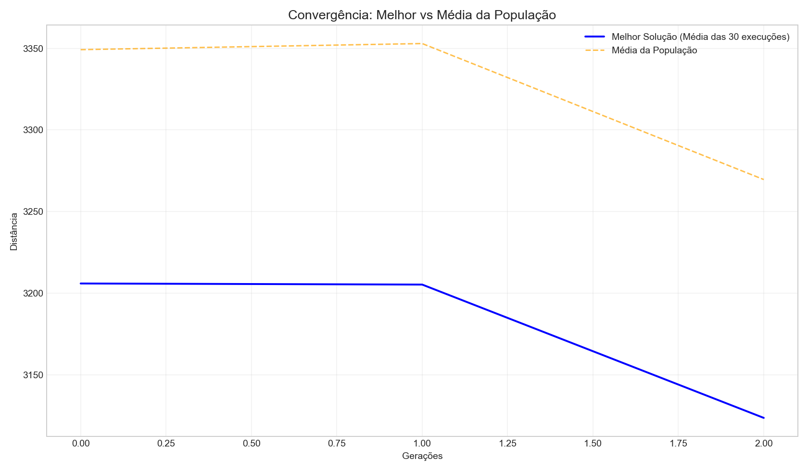
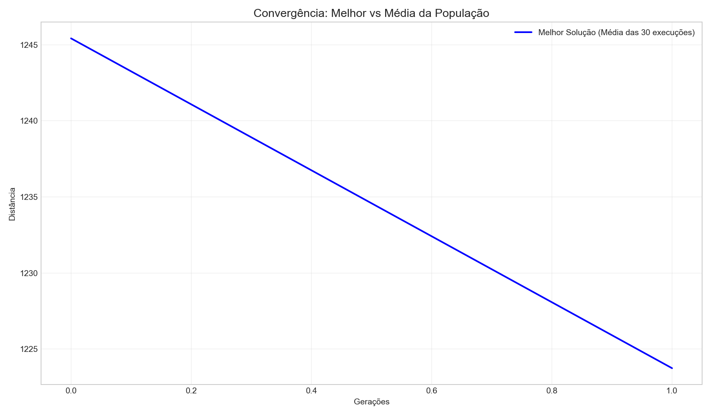
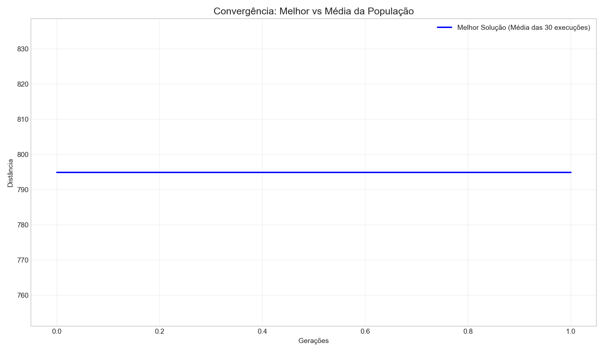

Data de Execução: 20/11/2025 17:01:39
Número de cidades: 101
Execuções por experimento: 2
Gerações: 2






AG_Padrao vs AG_AltaMutacao
Média A: 3272.69
Média B: 3123.80
t = 1.6849 | p = 2.3405e-01
Conclusão: não significativa.
ACO_Padrao vs SA_Padrao
Média A: 1223.74
Média B: 794.86
t = 9.5518 | p = 1.0784e-02
Conclusão: diferença SIGNIFICATIVA (p < 0.05)
AG_Padrao vs ACO_Padrao
Média A: 3272.69
Média B: 1223.74
t = 39.3233 | p = 6.4607e-04
Conclusão: diferença SIGNIFICATIVA (p < 0.05)
Algoritmo,Media,Mediana,Desvio Padrao,Melhor,Pior AG_Padrao,3272.686278918607,3272.686278918607,26.43683669380289,3246.249442224804,3299.12311561241 AG_AltaMutacao,3123.7959684612915,3123.7959684612915,84.32066398275697,3039.475304478535,3208.1166324440487 ACO_Padrao,1223.7402632416586,1223.7402632416586,44.90038231043627,1178.8398809312223,1268.6406455520948 SA_Padrao,794.8608537531998,794.8608537531998,0.0,794.8608537531998,794.8608537531998